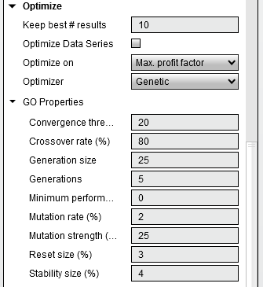

|
<< Click to Display Table of Contents >> Genetic Algorithm |


|
Genetic Algorithm
|
<< Click to Display Table of Contents >> Genetic Algorithm |
|
Very simply put the Genetic Algorithm attempts to find the most optimal set of parameters for a strategy. It does this not by brute force testing each individual combination as the default optimization method does, but instead using the concept of evolutionary theory borrowed from biology where only the fittest parents (combined with mutation and crossover) produce children for the next generation. Through testing of multiple generations you should have narrowed down on the most optimal parameters and therefore saving you time from having to test every single parameter combination.
 Understanding the Genetic Algorithm
Understanding the Genetic Algorithm
OverviewThe general idea of how the GA solves an optimization problem is analogous to the concept of how evolution via natural selection adapts a species to the environment. In biology, only the strongest individuals will be able to reproduce and pass on their superior genes to the next generation. Assuming each generation can only pass on the strongest genes, after several iterations we would be left with the optimal attributes for the environment. Through this same mechanism, the GA will test a random preset of your parameters. Through multiple generations of testing, the parameters will zero in on an optimum solution.
How the GA calculatesThe GA determines its solution through the following steps:1.Begin with an initial population size consisting of randomly selected individuals (parameter setting combinations) 2.Compute the fitness (Optimize on...) for each individual in the population and assign probabilities to the population based on the fitness results. More fit results have more probability in being selected for breeding of the next generation. 3.Generate a new population for the next generation by selecting individuals from the prior generation to produce offspring via crossover and mutation (see below) 4.Repeat from step 2 till you reach the number of generations in your test Crossover and MutationCrossover is the process in generating offspring that are not 100% identical to their parents. It is done by taking half of the parameter settings from parent A and mixing it with the other half from parent B. Crossover allows GA to test different combinations of parameters and hone in on the optimal solution. Crossover alone however will eventually yield identical offsprings in the population through several generations and so through mutation, some random parameter settings will be interjected in a few of the offsprings to allow for an adaptive quality to the algorithm. |
 Understanding Genetic Algorithm parameters
Understanding Genetic Algorithm parameters
Please see the "Optimize a Strategy" article for how to run an optimization.
When you select the Genetic optimizer you will see the following optimization properties after you left click the triangle to the left of "GO Properties" to expand the properties.

|